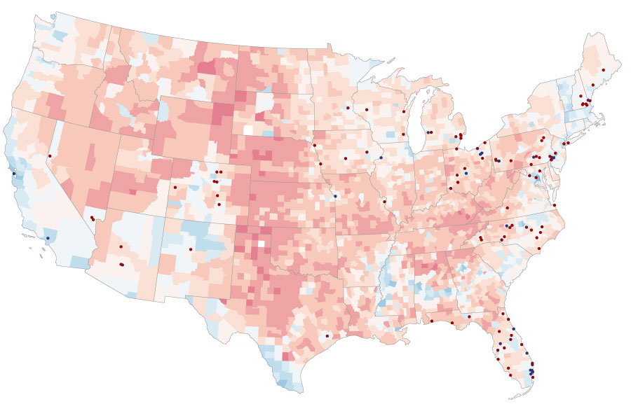
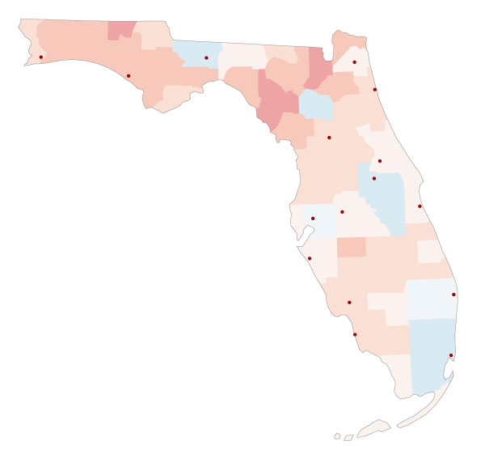

Last 10 Weeks Of The 2016 Campaign Trail
The 2016 presidential election was an anomaly unlike any other for journalists, political scientists, and most Americans. Now President Donald Trump talllied 304 electoral votes, winning states considered Democratic strongholds for years while securing the majority of votes in traditional swing states like Ohio and Florida as well. Soon after his victory, analysts attributed his win to the bold campaign strategy adopted by his campaign in the 10 weeks leading up to election day.
With frequent stops in the Rust Belt, eight in Ohio alone, and Florida, Trump outlasted and outperformed Hillary Clinton throughout the country. It was a backbreaking pace to the finish but one that ultimately delivered him the final result thought to be out of reach.
.jpg?c=12)
Winning the Rust Belt was key to Trump’s campaign. In June 2016, the business mogul announced he would focus his energy on fifteen states where he intended to “play heavy”: Ohio, Michigan, Minnesota, Wisconsin, Iowa, and Pennsylvania among them. Places he said Americans had been left behind, states Barack Obama had won handily in 2008 and 2012, and where Democrats were charged with losing touch with ordinary Americans. He tallied 16 stops in those states in the months of September and October, three in one day in Pennsylvania. And his bet paid off. On election night, they fell in his column one by one, and analysts were left speechless, pointing the finger at a befuddled Clinton.
.jpg?c=10)
In Ohio, that old saying rang true again: “As Ohio goes, so goes the nation.” With eight stops in the Buckeye State during the final leg of the campaign, Trump proved his get-up-and-go mentality would turn the state red. Montgomery Country was one of eight counties he flipped there, receiving 123, 909 votes to Clinton's 122, 016. That marginal difference in Montgomery, Lake, Wood, and Trumbull was a trend he replicated in similar swing counties in Iowa, Wisconsin, Michigan, and Pennsylvania. Clinton’s stops weren't enough, even despite an endorsement from NBA superstar LeBron James.
No other state in 2016 was perhaps more coveted than Florida. In prior elections, it along with Ohio had been key to previous Republican victories in 2000 and 2004. With resorts in Miami and Palm Beach, Trump was intent on making the state’s 29 electoral votes his for the taking. But it would be a hotly contested race where Clinton intended to walk away victorious. Her determination, however, was once again met with Trump's hustle. His 16 stops not only surpassed her 14, but six in the final week showed how valuable the state was to him.
When it was all said and done, Trump had flipped six states from 2012: Florida, Ohio, Pennsylvania, Wisconsin, Michigan, and Iowa. His plan blossomed even better than he could have imagined, and the world was left speechless by a “Make America Great Again” movement that had deeper roots than anticipated. Was campaigning in those states the key to victory all along? Today, there is probably more than one person besides the man in the Oval Office who would say 'yes'.